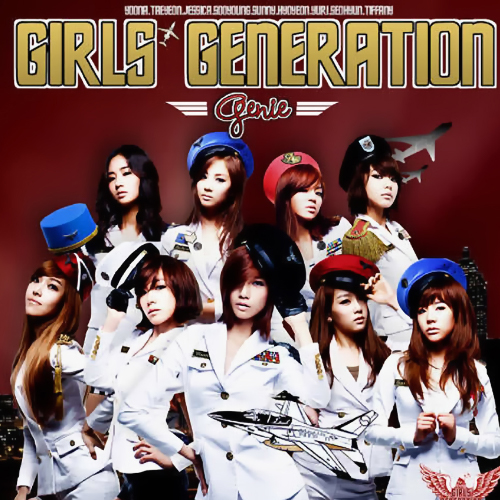

굉장히 오랜만에 밝고 상큼한 콘셉트의 타이틀곡이다.
이전
곡들에 비해 멤버들의 파트 분배도 고루 분배되었으며, 곡 자체도
깔끔하고 청량한 분위기 덕분에 ‘여름에 딱 어울리는 곡이다.’
‘대중성을
갖춘 좋은 곡이다.’ 등 리스너들에게 좋은 평가를 받았다. 앞서 티저를
공개했을 때에도 대중들의 평과 반응이 상당히 긍정적이었다.
ONSTYLE 예능 프로그램 ‘효연의 백만라이크’에서 공개된
뮤직비디오 촬영 에피소드를 보면 씬 일부가 먹구름이 끼어 있는
우중충한 바다에서 촬영한 듯한데,
실제 뮤직비디오에서는
새파란 하늘에 하늘색 바다로 보정되었다.
방송 활동은 7월 10일 KBS ‘뮤직뱅크’부터 시작해, 8월 1일 방송된 MBC ‘쇼! 음악중심’을 마지막으로 활동이 마무리되었다.
2015년 11월에 개최된 단독 콘서트에서 겨울 버전 가사가
공개되었으며,
2015년 연말에 열린 KBS ‘가요대축제’
무대에서도 연말 분위기에 맞게 오프닝으로 겨울 버전을 불렀다.
겨울
버전 가사도 상당히 센스 있고 재미있게 개사해 자연스러운 느낌을 준다.